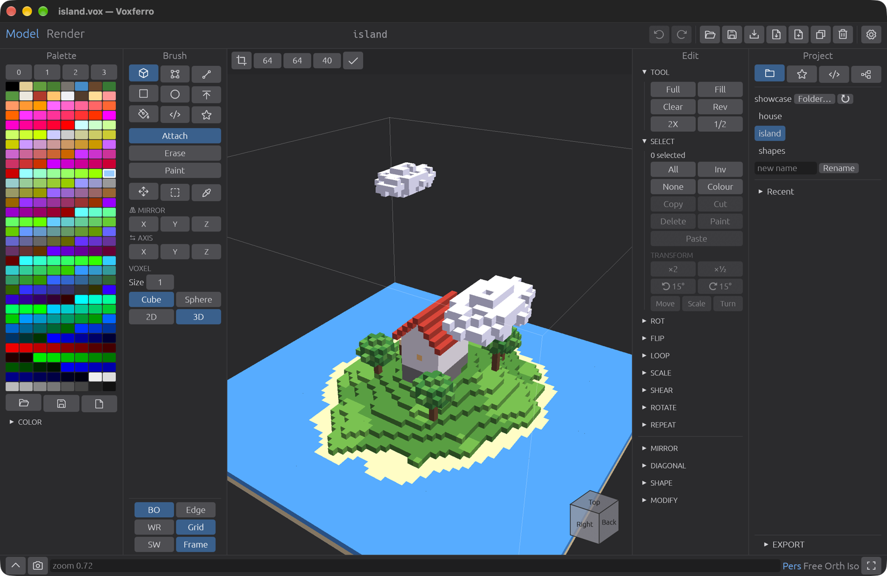
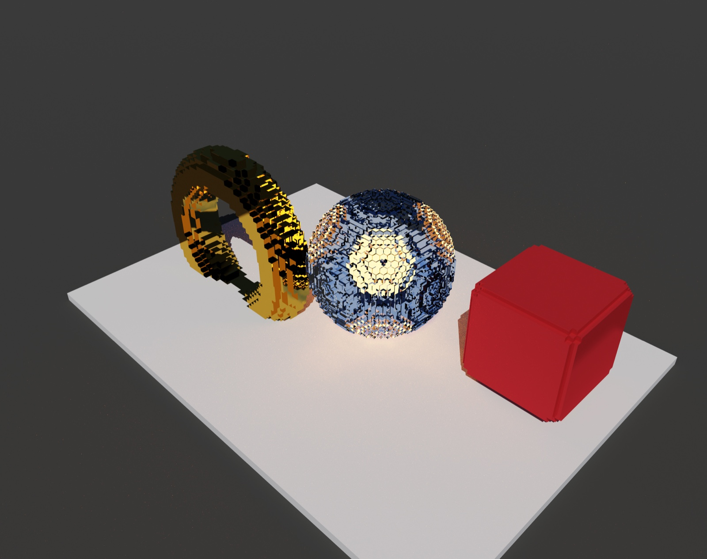

Qué es Voxferro
Un vóxel es a un volumen lo que un píxel es a una imagen: una celda de una cuadrícula 3D. Voxferro es un programa para modelar con vóxeles: con pinceles se añaden, se borran y se pintan cubitos, se colocan varios modelos en una escena, se animan y se hacen renders fotorrealistas.
Abre y guarda archivos .vox sin perder nada (materiales, cámaras, capas, animación, ajustes de render).
La compatibilidad de archivos es un objetivo; la arquitectura es propia, en Rust idiomático.
Lo que hace hoy, en resumen:
- Edición: pinceles de vóxel, caja, línea, cara, relleno, patrón y script; selección, copiar y pegar, transformaciones con el puntero; un panel Edit (rellenar, vaciar, reflejar, ruido Perlin, laberinto, erosión...).
- Escenas: varios modelos, grupos, capas y animación por fotogramas clave.
- Render: un path tracer progresivo en la GPU, con metal, vidrio, emisión, nubes, cielo atmosférico y mapas HDR.
- Exportación: OBJ, PLY, marching cubes, XRAW, Qubicle, SLAB6, cortes en PNG y sprites isométricos.
- Automatización: una consola de comandos, scripts de vóxeles en la GPU y un servidor MCP para que un agente de IA pueda usar el editor.
El viaje de un vóxel
La forma más fácil de entender el programa es seguir un vóxel desde el disco hasta la pantalla. Cada paso es un capítulo de esta guía:
- LeerEl archivo
.voxse convierte en estructuras de Rust. - Guardar en memoriaUna cuadrícula densa de bytes, dividida en bloques de 32³.
- EditarCada cambio es un comando que sabe deshacerse.
- DibujarUna malla de caras visibles, rasterizada con wgpu.
- RenderizarRayos que recorren la cuadrícula en un compute shader.
Las dos primeras etapas no saben nada de gráficos. Las tres últimas viven en la aplicación, la única parte que habla con la GPU.
Tecnologías
Todo está escrito en Rust (edición 2024, versión mínima 1.89) y en WGSL, el lenguaje de shaders de WebGPU. Estas son las piezas y el motivo de cada elección:
| Pieza | Para qué | Por qué esta |
|---|---|---|
eframe / egui 0.36 | Ventana, bucle de eventos e interfaz | Una interfaz en modo inmediato: toda la interfaz se vuelve a describir en cada fotograma, sin un árbol de widgets que mantener sincronizado. Trae wgpu de serie. |
wgpu 30 | Todos los gráficos | Una sola API que se convierte en Metal en el Mac y en Vulkan en Linux y Windows (DirectX 12 cuando una máquina con Windows no tiene controlador de Vulkan). En Apple silicon emite Metal nativo, sin pasar nunca por OpenGL. |
| WGSL | Shaders: viewport, sombras, path tracer, posprocesado, kernels | El lenguaje propio de wgpu; naga lo traduce para cada plataforma (MSL, HLSL, SPIR-V). |
naga 30 | Scripts de vóxeles | Compila a WGSL los scripts de vóxeles escritos en GLSL e informa de los errores con su número de línea antes de que la GPU los vea. |
glam 0.34 | Vectores, matrices, cuaterniones | SIMD, y el estándar del ecosistema. |
bytemuck | Pasar structs a la GPU | #[derive(Pod)] convierte un struct en bytes sin copias y sin unsafe propio. |
rfd 0.17 | Diálogos de abrir y guardar | Los paneles nativos de cada sistema. |
miniz_oxide, png | Imágenes PNG | Comprimir los renders y leer los archivos de paleta, que son PNG de 256×1. |
rmcp, tokio, axum | El servidor MCP | El SDK oficial de Rust para el Model Context Protocol, servido por HTTP en un hilo propio. |
egui-phosphor | Iconos | La fuente de iconos Phosphor, empaquetada para egui. |
dot_vox | Solo en las pruebas | Un lector de .vox independiente, para comprobar que el nuestro lee lo mismo. |
| GitHub Actions | CI y publicación de versiones | Compila, prueba y empaqueta en Linux, Windows y macOS. |
eframe ya depende de wgpu. Si el proyecto pidiera otra versión de wgpu, Cargo compilaría las dos y sus tipos dejarían de ser asignables entre sí, con errores casi ilegibles. Por eso las versiones se eligen para que haya un solo wgpu en el grafo de dependencias, y se comprueba con cargo tree | grep wgpu.
Tres crates
El código es un workspace de Cargo con tres crates (paquetes de Rust). Cada uno depende solo de los que tiene a su izquierda:
vox-format
Lee y escribe archivos .vox (versiones 150 y 200). Solo sabe de bytes.
voxel-core
El volumen, el grafo de escena, la animación, el deshacer, los pinceles, el mallado, marching cubes y las exportaciones.
depende de: vox-format, glamapp (el binario voxferro)
La ventana, la interfaz, wgpu, los shaders, la consola, el path tracer y el servidor MCP.
depende de: voxel-core, eframe, wgpu…La división es deliberada: los dos primeros crates no dependen de nada gráfico. Así, cargo test -p vox-format -p voxel-core tarda segundos, porque no compila wgpu, y la lógica se puede probar sin ventana y sin GPU.
# the fast tests: no wgpu
cargo test -p vox-format -p voxel-core
# everything, as CI runs it
cargo clippy --workspace --all-targets -- -D warnings
cargo test --workspaceLeer un archivo .vox
Un .vox empieza con la palabra mágica VOX y un número de versión. Después viene un árbol de chunks, al estilo RIFF. Cada chunk abre con una cabecera de tres campos:
Como cada chunk indica cuánto mide su contenido y cuánto miden sus hijos, un lector puede saltarse cualquier chunk que no conozca. Por eso un solo parser lee todas las versiones del formato, y por eso los archivos escritos por versiones más nuevas del formato no rompen el lector.
| Chunk | Qué contiene |
|---|---|
MAIN | La raíz; todo lo demás son sus hijos. |
SIZE + XYZI | Un modelo: su tamaño y la lista de vóxeles, de cuatro bytes cada uno (x, y, z, índice de color). |
RGBA | La paleta: 256 colores. |
nTRN, nGRP, nSHP | El grafo de escena: transformaciones, grupos y formas (qué modelo se muestra). |
LAYR | Capas: nombre, color, visibilidad. |
MATL | El material de cada color: difuso, metal, vidrio, emisivo, nube, mezcla. |
rOBJ, rCAM | Ajustes de render y cámaras guardadas. |
IMAP, NOTE, META | El orden en que se muestra la paleta, sus notas y datos como el rango de la animación. |
DICT: la bolsa de claves
Los nodos, las capas, los materiales, las cámaras y los ajustes no guardan structs empaquetados, sino pares clave/valor de texto (_t "10 0 4", _rough "0.1"). Un lector que no reconoce una clave simplemente la ignora. Voxferro va más allá: conserva las claves que no entiende y las vuelve a escribir, así que no se pierde nada al guardar.
Escritura
Escribir tiene una dificultad: la cabecera de un chunk necesita el tamaño de sus hijos antes de escribirlos. write.rs construye cada chunk en su propio búfer y lo inserta en su sitio cuando ya se conocen las longitudes. El guardado es atómico: el archivo se escribe con un nombre temporal y luego se renombra, así que un fallo a medias nunca deja un archivo roto.
El modelo en memoria
Volume: una cuadrícula densa
Un modelo es un Volume: un Vec<u8> con un byte por celda. El byte es un índice de paleta (de 1 a 255); el 0 significa vacío. Es denso, no disperso: un modelo mide como mucho 256³, así que el peor caso son 16 MB, y a cambio leer cualquier celda cuesta siempre lo mismo.
pub struct Volume {
size: [u32; 3],
voxels: Vec<u8>, // palette index per cell; 0 = empty
versions: Vec<u64>, // one version per 32³ block
}El volumen se divide en bloques de 32³, y cada bloque lleva una versión que cambia cada vez que cambia uno de sus vóxeles. Las versiones salen de un contador global, así que nunca se reutilizan. Todo lo que se deriva de los vóxeles (la malla, la cuadrícula del path tracer) compara versiones y rehace solo los bloques que cambiaron, venga el cambio de un pincel, de la consola, de un kernel o del deshacer.
Document: todo lo que una edición puede cambiar
El Document reúne la escena (modelos y grafo), la paleta, los materiales, los ajustes de render, las capas, las cámaras y el orden de la paleta. Es exactamente lo que va al archivo.
Grafo de escena y animación
Los nodos nTRN → nGRP → nSHP forman un árbol. Para dibujar, flatten() lo recorre en un fotograma dado y produce una lista plana de instancias: qué modelo, dónde y con qué giro. Un modelo colocado diez veces se guarda una sola vez y se instancia diez.
La animación guarda fotogramas clave en los nodos. Entre dos claves, la posición se interpola linealmente. No es una suposición: un archivo animado guardado tiene una clave con x = 44 en el fotograma 11 y otra con x = 148 en el fotograma 19, y guarda como posición en el fotograma 17 el valor 122, exactamente 44 + 6/8 · 104.
Edición y deshacer
La idea central: todo pasa por la consola. Un botón, un atajo, una línea tecleada, un script o un agente por MCP producen lo mismo, una línea de texto, y un único intérprete la ejecuta.
--scriptbrush attach boxconsole::executeCommandaplicado al DocumentGracias a eso, la automatización salió gratis: todo lo que hace un clic se puede escribir en un script, y un agente usa exactamente el mismo historial de deshacer que la persona.
Los cambios son valores
Cada cambio que se puede deshacer es una variante de enum Command, que guarda el antes y el después:
pub enum Command {
SetVoxels { model: usize, changes: Vec<(IVec3, u8, u8)> }, // cell, before, after
ReplaceModel { model: usize, before: Volume, after: Volume },
SetColor { index: u8, before: Color, after: Color },
SetGraph { before: Vec<SceneNode>, after: Vec<SceneNode> },
// ... palette, materials, render, layers, cameras
}Un enum tiene una ventaja sobre una clase por comando, cada una con su deshacer y su rehacer: el match de Rust es exhaustivo, así que añadir un comando que no se puede deshacer es un error de compilación y no un fallo que se descubre más tarde.
Pinceles como funciones puras
Un pincel combina un modo (añadir, borrar, pintar) con una forma (vóxel, caja, línea, cara, relleno). En brush.rs cada combinación es una función pura: recibe el volumen y los puntos del trazo y devuelve la lista de celdas que hay que escribir. La app convierte esa lista en un solo Command, así que un trazo entero se deshace de una vez.
Para saber qué vóxel hay bajo el puntero, raycast.rs lanza un rayo desde la cámara con el mismo algoritmo DDA que usa el path tracer (ver el capítulo 9).
Dibujar el editor
La GPU dibuja triángulos, no vóxeles. Por eso el editor convierte cada modelo en una malla, en tres pasos.
1. Solo las caras visibles
Una cara se dibuja solo si la celda del otro lado está vacía. Un bloque macizo de 64³ tiene 24 576 caras visibles en lugar de 1,5 millones: la diferencia entre un visor que funciona y uno que no.
2. Fusionar caras (mallado voraz)
Las caras coplanares de un mismo color se fusionan en rectángulos. Para cada dirección y cada corte, las caras visibles forman una cuadrícula 2D de colores; los rectángulos crecen primero a lo largo de un eje y luego a lo largo del otro.
3. Rehacer solo lo que cambió
La malla de cada modelo se genera por bloques de 32³, y cada bloque recuerda las versiones a partir de las que se construyó (la suya y las de sus seis vecinos, porque una cara del borde depende del vecino). Tras una edición solo se rehacen los bloques tocados, en todos los núcleos. En un Apple M2, la malla de un modelo de 256³ con 4,5 millones de vóxeles se genera en unos 100 ms; editarlo después cuesta unos 8 ms.
La pasada de render
egui dibuja la interfaz en su propia pasada de render, pero esa pasada no tiene búfer de profundidad, que la geometría sólida necesita. Por eso la escena se dibuja con wgpu en una textura propia (color y profundidad), que luego se registra en egui y se muestra como cualquier otra imagen.
voxel.wgslsombrea las caras. Cada vértice lleva un índice de paleta en lugar de un color: cambiar un color de la paleta no reconstruye ninguna malla.shadow.wgslconstruye un mapa de sombras (shadow map): la profundidad de la escena tal como la ve la luz.lines.wgsldibuja la caja del modelo y la cuadrícula del suelo, con mezcla alfa.

El path tracer
El modo de render no usa la malla. Lanza rayos desde la cámara, los hace rebotar por la escena y promedia una enorme cantidad de caminos de luz aleatorios. Eso es el path tracing, y da sombras suaves, reflejos, vidrio y luz indirecta sin trucos.
Progresivo
Un compute shader (pathtrace.wgsl, en grupos de trabajo de 8×8 píxeles) calcula una muestra por píxel en cada fotograma y la suma a un acumulador. La imagen se va limpiando mientras la cámara está quieta y vuelve a empezar cuando se mueve.
Windows reinicia una GPU cuyo trabajo dura más de dos segundos. En una GPU integrada, una muestra de una imagen grande con formas de vóxel tardaba cuatro, y el dispositivo se perdía. Por eso cada muestra se traza en franjas de filas, y cada franja se envía por separado. El tamaño de la franja se ajusta al tiempo de GPU medido, con el objetivo de una décima de segundo, así que una GPU rápida vuelve enseguida a un solo envío por muestra, y la imagen es idéntica bit a bit.
Recorrer la cuadrícula: DDA
Toda la escena visible va a la GPU como una textura 3D de índices. Para avanzar un rayo, el DDA de Amanatides–Woo da un paso por el eje que llega antes al siguiente borde de celda. Se visitan todas las celdas que toca el rayo, en orden, así que la primera sólida es de verdad la más cercana. Con pasos de tamaño fijo, el rayo podría atravesar una pared de un vóxel sin verla.
OpenGL 2 no tenía etapa de cómputo ni storage buffers, así que había que empaquetar un volumen en una textura 2D con aritmética modular. Con wgpu la cuadrícula se lee directamente en 3D y todo ese empaquetado desaparece.
Materiales y luz
- Materiales: los chunks
MATLse resuelven en la CPU en una tabla de 256 entradas, una por color. Hay difuso, metal, vidrio (con absorción de Beer–Lambert: el vidrio toma su color de lo que absorbe), emisivo, nube (un medio que absorbe, dispersa o emite) y mezcla. - Sol y cielo: un rayo de sombra hacia el sol en cada rebote. El cielo puede ser uniforme, un mapa HDR (muestreado según el brillo, con una tabla de sumas acumuladas) o atmosférico, con dispersión de Rayleigh y de Mie, que enrojece el sol al atardecer.
- Lámparas: los vóxeles emisivos con una cara al aire se listan en la CPU. Una superficie elige uno al azar y le lanza un rayo de sombra (next event estimation), en lugar de esperar a que un rebote lo encuentre por suerte.
- Aleatoriedad: un hash PCG por píxel y por fotograma, y direcciones con ponderación de coseno, para que el término de Lambert se cancele.
Posprocesado
Un segundo compute shader, post.wgsl, lee el acumulador y aplica bloom, exposición, viñeteado, la curva tonal ACES y la gamma. Es una pasada aparte porque el bloom lee píxeles vecinos, que la primera pasada todavía está escribiendo.
Formas de vóxel
Los vóxeles se pueden renderizar como esferas, cilindros, ladrillos con tetones, arcilla o marching cubes. Ese código está detrás de una constante de pipeline (override SHAPES): el pipeline habitual se compila sin él, y un segundo pipeline con formas se crea solo cuando hace falta. El motivo es Windows: con todo expandido en línea, el shader era demasiado grande y el rasterizador por software de DirectX lo dibujaba en negro. La tabla de marching cubes se construye uniendo las aristas cruzadas en cada cara de la celda.
Líneas sobre las superficies
El render puede dibujar una cuadrícula cada pocos vóxeles y una línea en cada arista donde la superficie cambia de dirección. No son una segunda pasada: un punto de la superficie simplemente toma el color de la línea antes de iluminarse, en cada rebote, así que las líneas también se ven en los reflejos.

Cómputo en la GPU
La GPU hace algo más que dibujar. Varias operaciones de edición son kernels: una función que se evalúa una vez por vóxel, para todos a la vez, en un compute shader (voxel_ops.wgsl, en grupos de trabajo de 4×4×4).
Scripts de vóxeles (xs)
El comando xs ejecuta scripts del usuario. Un script define una función map(v) que recibe el centro de una celda y devuelve el índice de color que hay que poner ahí. Voxferro acepta dos lenguajes:
- GLSL (
.txt): scripts de vóxeles en GLSL, sin cambios.nagalos compila en un compute shader y se los pasa a wgpu como WGSL. - WGSL (
.wgsl): los propios del proyecto, comoterrain,mengeroerode.
Cada pasada lee el modelo tal como estaba antes de la pasada, nunca lo que la misma pasada ya ha escrito. Así un script puede hacer crecer, erosionar o desplazar un modelo, y -n 3 encadena tres pasadas.

terrain, una esponja de Menger con menger y una bola desgastada por tres pasadas de erode.Controlado por un agente
Voxferro incluye un servidor MCP (Model Context Protocol), el protocolo que usa un asistente como Claude para llamar a herramientas externas. Con --mcp, o desde el panel, escucha en 127.0.0.1:47800.
cargo run -p voxferro -- --mcp
claude mcp add --transport http voxferro http://127.0.0.1:47800/mcpEl servidor corre en su propio hilo, con su propio runtime de tokio, y nunca toca el documento. Cada llamada se convierte en una petición al hilo de la interfaz, que la ejecuta entre fotogramas como si se hubiera tecleado en la consola: el mismo intérprete, el mismo historial de deshacer. La respuesta vuelve por un canal oneshot.
| Herramienta | Qué hace |
|---|---|
run_command, run_commands | Ejecuta una línea de consola, o varias como un solo paso de deshacer. |
describe_scene, get_palette | Describe el documento y la paleta en JSON. |
set_voxels | Escribe los vóxeles indicados en el modelo seleccionado. |
capture_view | Devuelve la vista del editor o el render como PNG, para que el agente vea lo que hizo. |
open_file, save_file | Abre y guarda; sobrescribir un archivo requiere el sí de la persona. |
Seguridad: solo acepta conexiones locales, rechaza cualquier petición que un navegador marque con un Origin (contra ataques desde páginas web) y nunca sobrescribe un archivo sin una confirmación en la ventana.
Pruebas, fuzzing y CI
- 301 pruebas, cada una junto al código que prueba (
#[cfg(test)] mod testsal final del archivo). El lector de.voxse contrasta condot_voxy con modelos de ejemplo. - Fuzzing:
examples/fuzz_vox.rscorrompe archivos válidos y comprueba que el lector nunca se detiene con un panic. La última ejecución pasó 120 000 casos sin un solo fallo. - Clippy con
-D warnings: cualquier advertencia hace fallar la CI.
Integración continua
Con cada push, GitHub Actions compila y prueba en Linux y Windows, y ejecuta tres pruebas de humo: abrir la vista del editor, renderizar una escena con el path tracer (y comprobar el brillo medio de la imagen) y una sesión MCP completa. Las máquinas de la CI no tienen GPU: Linux usa lavapipe (Vulkan por software) y Windows WARP, el rasterizador por software de DirectX, que encontró fallos reales:
- La pila del hilo principal (1 MB) se desbordaba al compilar el shader;
build.rsla sube a 16 MB. - El compilador FXC no puede escribir en un vector a través de un índice variable (
v[axis] = …), así que se usan máscaras. - Un shader demasiado grande se dibujaba en negro; de ahí el pipeline aparte para las formas.
Subir una etiqueta v* lanza otro workflow que compila las cuatro descargas: macOS universal (.dmg y .zip), Windows y Linux.
Por dónde empezar a leer
Un orden que sigue el viaje del vóxel. Cada archivo empieza con un comentario //! que explica qué hace y por qué:
crates/vox-format/src/lib.rs,dict.rsyparse.rs: el formato.crates/voxel-core/src/volume.rs,document.rsycommand.rs: el modelo y el deshacer.mesh.rs,greedy.rsymesh_cache.rs: de los vóxeles a los triángulos.raycast.rsybrush.rs: el puntero y los pinceles.crates/app/src/main.rs,console.rsyrenderer.rsconshaders/voxel.wgsl: la app y el viewport.pathtrace.rs,shaders/pathtrace.wgslypost.wgsl: el render.xs.rsymcp.rs: los scripts y los agentes.
Para verlo funcionar, reconstruye la isla del principio de esta página y renderízala:
cargo run --release -p voxferro -- --script assets/showcase/island.cmds --render-modeY para renderizar a un PNG sin nadie delante de la ventana:
cargo run --release -p voxferro -- scene.vox --run "render image 1920 1080 256 out.png"La hoja de ruta enumera las fases y en qué punto está cada una, y el README, todos los comandos de consola y los atajos (los dos, en inglés).
Glosario
- Vóxel (voxel)
- Una celda de una cuadrícula 3D. Aquí guarda un índice de paleta.
- Índice de paleta
- Un número de 1 a 255 que apunta a un color (y a un material). El 0 es vacío.
- Chunk
- Dos cosas distintas: en el archivo, un bloque con cabecera; en memoria, un bloque de 32³ vóxeles con su versión.
- Malla (mesh)
- La lista de triángulos que dibuja la GPU.
- Mallado voraz (greedy meshing)
- Fusionar las caras coplanares de un mismo color en rectángulos grandes.
- Shader
- Un programa que se ejecuta en la GPU. Los shaders de vértices y de fragmentos dibujan; los compute shaders calculan cualquier cosa.
- WGSL
- El lenguaje de shaders de WebGPU y wgpu.
- Búfer uniform / storage
- Dos formas de pasar datos a un shader: un uniform es pequeño, de solo lectura y rápido; un storage buffer es grande y se puede escribir.
- Path tracing
- Simular la luz siguiendo caminos aleatorios de rayos y promediándolos.
- DDA
- Recorrer una cuadrícula con un rayo, celda a celda, sin saltarse ninguna.
- Next event estimation
- Apuntar un rayo directamente a una luz en lugar de esperar a encontrarla al azar.
- Mapeo tonal (tone mapping, ACES)
- Comprimir la luz de un render, que no tiene techo, al rango que muestra una pantalla.
- Interfaz en modo inmediato (immediate mode UI)
- La interfaz se vuelve a describir en cada fotograma, como hace egui.
- MCP
- Model Context Protocol: el protocolo que usa un agente de IA para llamar a herramientas.
- Fuzzing
- Probar un programa con miles de entradas corruptas o aleatorias para encontrar fallos.
- Clippy
- El linter de Rust: avisa del código sospechoso o poco idiomático.
- MSRV
- La versión mínima de Rust con la que compila el proyecto (1.89).